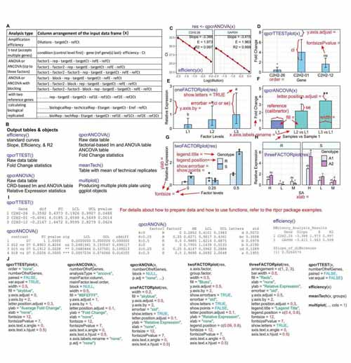

rtpcr: a package for statistical analysis and graphical presentation of real-time PCR data in R
Author: Ghader Mirzaghaderi
A quick guide in PDF format to use rtpcr package: 
Real-time polymerase chain reaction (real-time PCR), is widely used in biological research. Various analysis methods are employed on the real-time PCR data to measure the mRNA levels under different experimental conditions. ‘rtpcr’ package was developed for amplification efficiency calculation and statistical analysis of real-time PCR data in R. By accounting for up to two reference genes and amplification efficiency values, a general calculation methodology described by Ganger et al. (2017) and Taylor et al. 2019, matching both Livak and Schmittgen (2001) and Pfaffl et al. (2002) methods was used. Based on the experimental conditions, the functions of the ‘rtpcr’ package use a t-test (for experiments with a two-level factor) or analysis of variance (for cases where more than two levels or factors or a blocking factor exist) to calculate the fold change (FC) or relative expression (RE). The functions further provide standard deviations and confidence limits for means, apply statistical mean comparisons and present letter mean grouping. To facilitate function application, different data sets were used as examples and the outputs were explained. An outstanding feature of ‘rtpcr’ package is providing publication-ready bar plots with various controlling arguments for experiments with up to three different factors. The ‘rtpcr’ package was built based on a general method with various capabilities. It is user-friendly and easy to work with and provides an applicable resource for analyzing real-time PCR data in R. ‘rtpcr’ is a CRAN package although the development version of the package can be obtained through Github.
Overview
real-time PCR, also known as quantitative PCR (qPCR), is a powerful analytical tool that has revolutionized nucleic acid quantification. Among the various approaches developed for data analysis in real-time PCR, the Livak method (Livak and Schmittgen, 2001), also known as the 2−ΔΔCt method, stands out for its simplicity and widespread use. This method assumes that both the target and reference genes are amplified with efficiencies close to 100 %. On the other hand, the Pfaffl method (Pfaffl et al., 2002) offers a more flexible approach by accounting for differences in amplification efficiencies between the target and reference genes. This method adjusts the calculated expression ratio by incorporating the specific amplification efficiencies, thus providing a more accurate representation of the relative gene expression levels (Pfaffl et al., 2002). Both methods have their merits and limitations, and the choice between them depends on the experimental design and the precision required for the study. This paper aims to delve into the mathematical underpinnings of these methodologies, providing a comprehensive understanding of their applications and implications in real-time PCR analysis. Among the various approaches developed for data analysis in real-time PCR, the Livak method, also known as the 2−ΔΔCt method, stands out for its simplicity and widespread use.
Fold Change due to Treatment=
$$= \frac{2^{-(Ct_{target}-Ct_{ref})Tr}}{2^{-(Ct_{target}-Ct_{ref})Co}}$$
= 2[−(Cttarget − Ctref)Tr − (Cttarget − Ctref)Co]
= 2−(ΔCtTr − ΔCtCo)
= 2−ΔΔCt
where Tr is Treatment and Co is Control conditions, respectively. This method assumes that both the target and reference genes are amplified with efficiencies close to 100%, allowing for the relative quantification of gene expression levels (Livak and Schmittgen, 2001). On the other hand, the Pfaffl method offers a more flexible approach by accounting for differences in amplification efficiencies between the target and reference genes. This method adjusts the calculated expression ratio by incorporating the specific amplification efficiencies, thus providing a more accurate representation of the relative gene expression levels (Pfaffl et al., 2002).
$$\text{Fold Change due to Treatment} = \frac{E^{-(Ct_{Tr}-Ct_{Co})target}}{E^{-(Ct_{Tr}-Ct_{Co})ref}}$$
A generalized calculation method
ΔC_t is the difference between the Ct value of the target gene and the Ct value of the referenec gene (e.g. ΔC_t = Cttarget−Ctref). The rtpcr package functions are mainly based on the calculation of efficiency-weighted ΔC_t (wΔC_t) values from target and reference gene Ct values which are weighted for their amplification efficiencies as below:
wΔCt = log2(Etarget).Cttarget − log2(Eref).Ctref
From the mean wΔCt values over biological replicates, the expression of a target gene relative to the reference gene (e.g. calibrated by the reference gene) can be calculated for each condition as:
$$\text{Relative Expression (RE)} = 2^{-\overline{w\Delta Ct}}$$
Often, one condition is considered as calibrator condition. Examples are Treatment versus Control where Control is served as the calibrator, or time 0 versus time 1 (e.g. after 1 hour) and time 2 (e.g. after 2 hours) where time 0 is served as the reference or calibrator level. So, calibrator is the reference level or sample that all others are compared to. The fold change (FC) expression of a target gene for the reference or calibrator level is 1 because it is not changed compared to itself. The fold change expression of a target gene due to the treatment can be calculated as follows:
$$\text{Fold Change due to Treatment} = 2^{-(\overline{w\Delta Ct}{Tr}-\overline{w\Delta Ct}{Co})}$$
if wDCt values are calculated from the E values, these calculations match the formula of Pfaffl while if 2 (complete efficiency) is used instead the result matches the 2−ΔΔCt method. Standard error of the FC and RE means is calculated according to Taylor et al. 2019 in rtpcr package. Here, a brief methodology is presented but details about the wΔC_t calculations and statistical analysis are available in (Ganger et al., 2017). What is important here is that although the relative or fold change gene expression follows a lognormal distribution, a normal distribution is expected for the wΔCt or wΔΔCt values making it possible to apply t-test or analysis of variance to them. Following analysis, wΔCt values are statistically compared and standard deviations and confidence intervals are calculated, but the transformation y = 2^-x is applied in the final step to report the relative expression ratios, errors, and confidence limits.
Installing and loading
The rtpcr package and source code are available for download from CRAN website (https://www.r-project.org) under GPL-3 license. The rtpcr package can be installed by running the following code in R:
# Installing from CRAN
install.packages("rtpcr")
# Loading the package
library(rtpcr)Alternatively, the latest version of the rtpcr package with the latest changes can be installed by running the following code in your R software. I strongly recommend to install the package with the vignette as it contains information about how to use the ‘rtpcr’ package.
# Installing from github
devtools::install_github("mirzaghaderi/rtpcr", build_vignettes = T)
# If failed to build the vignette, just run the following code:
devtools::install_github("mirzaghaderi/rtpcr")
# Loading the package
library(rtpcr)Further information about how to use rtpcr package can be found here .
References
Livak Kenneth J, and Schmittgen TD. 2001. Analysis of Relative Gene Expression Data Using Real-Time Quantitative PCR and the Double Delta CT Method. Methods 25 (4). doi.org/10.1006/meth.2001.1262.
Ganger MT, Dietz GD, and Ewing SJ. 2017. A common base method for analysis of qPCR data and the application of simple blocking in qPCR experiments. BMC bioinformatics 18, 1-11. doi.org/10.1186/s12859-017-1949-5.
Pfaffl MW, Horgan GW, Dempfle L. 2002. Relative expression software tool (REST©) for group-wise comparison and statistical analysis of relative expression results in real-time PCR. Nucleic acids research 30, e36-e36. doi.org/10.1093/nar/30.9.e36.
Taylor SC, Nadeau K, Abbasi M, Lachance C, Nguyen M, Fenrich, J. 2019. The ultimate qPCR experiment: producing publication quality, reproducible data the first time. Trends in Biotechnology, 37(7), 761-774doi.org/10.1016/j.tibtech.2018.12.002.
Yuan, Joshua S, Ann Reed, Feng Chen, and Neal Stewart. 2006. Statistical Analysis of Real-Time PCR Data. BMC Bioinformatics 7 (85). doi.org/10.1186/1471-2105-7-85.
.